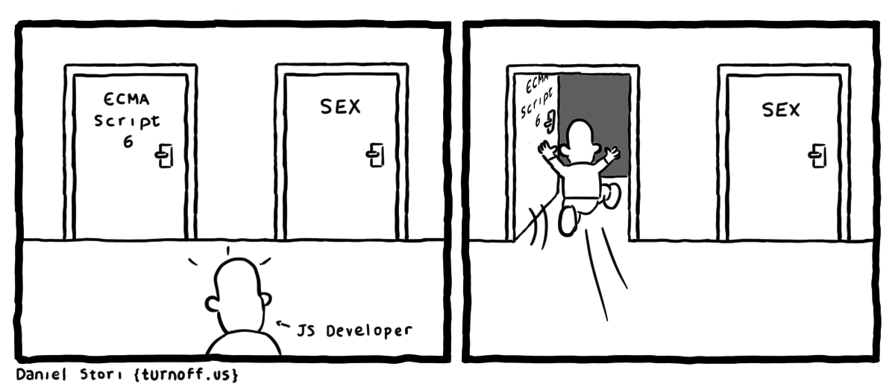

BaseDev 15
Большинство хороших программистов делают свою работу не потому, что ожидают оплаты или признания, а потому что получают удовольствие от программирования.
(Linus Torvalds)
A-Level Alex Frentsel © 2019
Алгоритм
Это последовательность шагов (команд,инструкций)
для достижения конечной цели
Основные виды алгоритмов:
- Линейный;
- Циклический;
- Ветвление;
- Смешанный.
Основные свойства алгоритмов:
- Дискретность - алгоритм состоит из шагов (команд, инструкций);
- Конечность - алгоритм должен вести к конечному результату;
- Определенность - каждая команда должна точно и однозначно определять действие;
- Понятность - исполняемые команды должны быть понятны исполнителю.
Программа
Это готовый для выполнения законченный алгоритм
Или просто задача которую компьютер должен выполнить
Программирование
Это описание алгоритма программным языком
Основные подходы программирования:

- Императивный - это описание того, как ты делаешь что-то;
- Декларативный - это описание того, что ты делаешь.
Закрепим?
- Объясните своими словами что такое алгоритм;
- Назовите все обязательные свойства алгоритмов;
- Составьте 5 любых алгоритмов с учетом обязательных свойств;
- Опишите алгоритм используя императивный и декларативный подходы;
Всем все понятно?
Идем дальше?
Why Javascript?
- Простой в освоении;
- Гибкий и мощный;
- Для старта нужен только браузер;
- Работает как на клиенте так и на сервере;
- Огромное кол-во информации в открытом доступе.
Готовьте ваши мозги!
Консоль браузера
Это своеобразное окно нашего чата с браузером.
Открывается комбинацией клавиш:
- Ctrl + Shift + I (Chrome, Firefox, Opera)
- F12 (Internet Explorer)
Переменные
typeof
The end
Как видно, совершенство достигается не тогда, когда уже нечего прибавить, но когда уже нечего отнять.
(Antoine de Saint-Exupéry)
A-Level Alex Frentsel © 2019